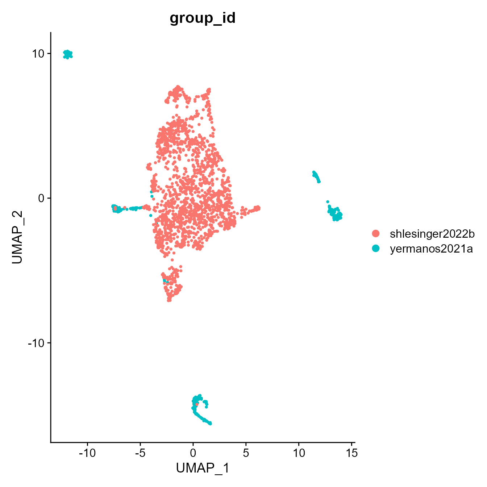
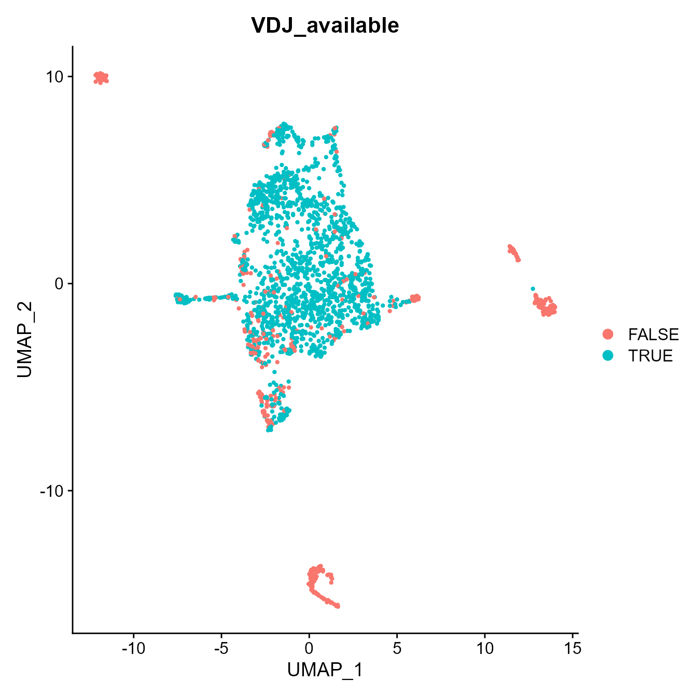
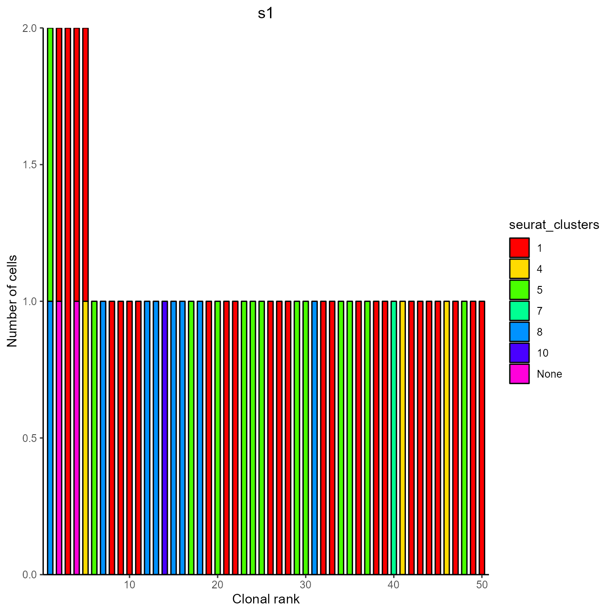

PlatypusDB vignette
Alexander Yermanos, Victor Kreiner, Andreas Agrafiotis
2022-03-15
Source:vignettes/platypus_database.Rmd
platypus_database.Rmd1. Introduction
PlatypusDB is a publicly available database for combined gene expression and immune receptor sequencing datasets. The package Platypus provides and easy-to-use R interface to source available data, integrate it with locally saved datasets and comprehensively analyse VDJ and GEX data. For more information on the analysis function of the Platypus package please refer to the corresponding vignettes. Here the functions concerning interaction with the PlatypusDB will be covered.
When using datasets from PlatypusDB please make sure to cite the source of the dataset as well as PlatypusDB at:
Yermanos A et al. Platypus: an open-access software for integrating lymphocyte single-cell immune repertoires with transcriptomes. NAR Genomics Bioinforma (2021) 3: doi:10.1093/NARGAB/LQAB023
*** DB BioRxiv Citation ***
library(Platypus)2. List available datasets
For an overview and to read specific information about available dataset, a list of metadata table can be downloaded.
projects_metadata <- PlatypusDB_list_projects()This is a list of named dataframes. Names correspond to project_ids, which are later used for downloading files.
names(projects_metadata)## [1] "agrafiotis2021a" "horns2020a" "khatun2019a"
## [4] "kreiner2021a" "kreiner2021b" "kuhn2021a"
## [7] "mathew2021a" "merkenschlager2021a" "neumeier2021a"
## [10] "neumeier2021b" "sandu2021a" "shlesinger2022a"
## [13] "shlesinger2022b" "shlesinger2022c" "yermanos2021a"
## [16] "yermanos2021b" "yermanos2022a" "yermanos2022b"
## [19] "yermanos2022c" "yewdell2021a" "yost2019"Use list indexing to view the metadata to get information specific to these projects and their samples
projects_metadata[["yermanos2021a"]]$dataset_info## project.id
## 2 yermanos2021a
## publication.title
## 2 Single-cell immune repertoire and transcriptome sequencing reveals that clonally expanded and transcriptionally distinct lymphocytes populate the aged central nervous system in mice
## organism celltype n
## 2 mouse T cells 17
## authors
## 2 Alexander Yermanos, Daniel Neumeier, Ioana Sandu, Mariana Borsa, Ann Cathrin Waindok, Doron Merkler, Annette Oxeniu, Sai T. Reddy
## date journal
## 2 14.02.2021 Proceedings of the Royal Society B: Biological Sciences
## doi correspondence.adress
## 2 10.1098/rspb.2020.2793 ayermanos@gmail.comSample specific information in the table are below
projects_metadata[["yermanos2021a"]]$sample_info## sample_id batch_id
## 7 Aged.CNS.pool.3m.Tcell.S1 b1
## 8 Aged.CNS.pool.12m.Tcell.S2 b1
## 9 Aged.CNS.pool.18m.Tcell.S3 b1
## 10 Aged.CNS.single.18m.Tcell.S4 b1
## full.name
## 7 T cells from entire brains of pooled 3-month-old C57/BL6j male mice
## 8 T cells from entire brains of pooled 12-month-old C57/BL6j male mice
## 9 T cells from entire brains of pooled 18-month-old C57/BL6j male mice
## 10 T cells from entire brains of a single 18-month-old C57/BL6j male mouse
## description
## 7 isolated by FACS based on CD3+ and CD4+ or CD8+ surface expression
## 8 isolated by FACS based on CD3+ and CD4+ or CD8+ surface expression
## 9 isolated by FACS based on CD3+ and CD4+ or CD8+ surface expression
## 10 isolated by FACS based on CD3+ and CD4+ or CD8+ surface expressionThe dataset yermanos2021a contains data from T cells in the CNS of aged mice. Analysis of this dataset is showcased in the Platypus Quickstart vignette.
! Note: In some cases, datasets contain GEX and VDJ for both B and T cells. Because VDJ libraries were prepared and sequenced separately, these are uploaded as two different projects, with the same GEX dataset. e.g. yermanos2021a contains T cell VDJ and GEX data across cells, while yermanos2021b contains B cell VDJ and again GEX data across cells. To filter out certain celltypes in GEX before clustering, please refer to the VGM vignette and the parameter “exclude.on.cell.state.marker”
3 Downloading data
The PlatypusDB_fetch function allows easy and flexible downloads using PlatypusDB.links.
The basis for all are PlatypusDB.links, with which any combination of files can be easily specified They are composes of three section divided by “/” 1. project_id (Author2019letter, … ) 2. sample_id (s1, s2, s3, …) -> SEE METADATA 3. filetype (VDJmatrix, GEXmatrix, metadata, VDJ, GEX)
Any of these components can be substituted with “ALL”. Further sample_id can be substituted with ““. (See examples below)
3.1 Download raw data and integrate via VGM
Here we download the raw VDJ and GEX Cellranger output data for sample 1 and 2 of the dataset yermanos2021a (To download data from all samples, substitute “s1” with “ALL”)
data_for_VGM <- PlatypusDB_fetch(
PlatypusDB.links = c("yermanos2021a/Aged.CNS.pool.3m.Tcell.S1/ALL",
"shlesinger2022b/TFH.LCMV.acuteLCMV.10dpi.S1/ALL"),
save.to.disk = F,
load.to.enviroment = F,
load.to.list = T)
#Now we can process this via the VGM function.
integrated_VGM <- VDJ_GEX_matrix(Data.in = data_for_VGM, verbose = T,
group.id = c("yermanos2021a","shlesinger2022b"))## [1] "2022-03-15 16:06:35 CET"## Warning: Feature names cannot have underscores ('_'), replacing with dashes
## ('-')
## Warning: Feature names cannot have underscores ('_'), replacing with dashes
## ('-')## [1] "2022-03-15 16:06:35 CET"
## [1] "2022-03-15 16:06:36 CET"
## [1] "2022-03-15 16:06:37 CET"
## [1] "2022-03-15 16:06:37 CET"
## Modularity Optimizer version 1.3.0 by Ludo Waltman and Nees Jan van Eck
##
## Number of nodes: 1965
## Number of edges: 58910
##
## Running Louvain algorithm...
## Maximum modularity in 10 random starts: 0.8588
## Number of communities: 14
## Elapsed time: 0 seconds## Warning: The default method for RunUMAP has changed from calling Python UMAP via reticulate to the R-native UWOT using the cosine metric
## To use Python UMAP via reticulate, set umap.method to 'umap-learn' and metric to 'correlation'
## This message will be shown once per session## [1] "2022-03-15 16:07:04 CET"
#And plot a umap to check the output
Seurat::DimPlot(integrated_VGM[[2]], group.by = "group_id")
Seurat::DimPlot(integrated_VGM[[2]], group.by = "VDJ_available") ## 3.2 Download processed VDJ_GEX_matrix
For each dataset, we generate a VDJ_GEX_matrix under default settings. This is to give quick access to a dataset which is ready for analysis, but comes at the cost of processing flexibility.
If the sample level Platypus.link element is empty (as below), the data element can be either “VDJmatrix”, “GEXmatrix” or “ALL”. In case of ALL both VDJ and GEX matrices are loaded and returned as one object.
Indipendently of what matrix is loaded, the classical list output format of the VDJ_GEX_matrix is conserved.
PlatypusDB_fetch(
PlatypusDB.links = c("yermanos2021b//ALL"),
save.to.disk = F,
load.to.enviroment = T,
load.to.list = F,
combine.objects = T) #Setting combine objects to true to return a single VGM## [1] "yermanos2021b__VDJGEXmatrix"
#Pass VGM onto Platypus analysis functions
VDJ_clonal_expansion(yermanos2021b__VDJGEXmatrix[[1]], color.by = "seurat_clusters")[[1]][[1]] ## 4. Integrating local and PlatypusDB data
Comparing local data to established datasets is one of the core functionalities of PlatypusDB.
The intregration is based on a standard by-sample data format and the VDJ_GEX_matrix function.
Here we first load in a local dataset via the PlatypusDB_load_from_disk() function (For showcasing purposes we load in 2 samples from the yermanos2021a dataset)
#load in local data
local_data <- PlatypusDB_load_from_disk(
VDJ.out.directory.list = list("C:/Users/PlatypusDB/yermanos2021b__VDJ_RAW/Aged.CNS.pool.3m.Bcell.S1", "C:/Users/PlatypusDB/yermanos2021b__VDJ_RAW/Aged.CNS.pool.12m.Bcell.S2"),
GEX.out.directory.list = list("C:/Users/PlatypusDB/yermanos2021b__GEX_RAW/Aged.CNS.pool.3m.Bcell.S1", "C:/Users/PlatypusDB/yermanos2021b__GEX_RAW/Aged.CNS.pool.12m.Bcell.S2"))## Setting GEX directory to provided path/filtered_feature_bc_matrix
#To process data with Feature barcode technology refer to the Platypus Feature Barcode vignetteWe next load samples 3 and 4 of the same dataset from PlatypusDB
PlatypusDB_data <- PlatypusDB_fetch(
PlatypusDB.links = c("yermanos2021b/Aged.CNS.pool.18m.Bcell.S3/ALL",
"yermanos2021b/Aged.CNS.single.18m.Bcell.S4/ALL"),
save.to.disk = F,
load.to.enviroment = F,
load.to.list = T)## 2022-03-15 16:07:32: Starting download of yermanos2021b_Aged.CNS.pool.18m.Bcell.S3_VDJ.RData...## 2022-03-15 16:07:32: Starting download of yermanos2021b_Aged.CNS.pool.18m.Bcell.S3_GEX.RData...## 2022-03-15 16:07:32: Starting download of yermanos2021b_Aged.CNS.single.18m.Bcell.S4_VDJ.RData...## 2022-03-15 16:07:32: Starting download of yermanos2021b_Aged.CNS.single.18m.Bcell.S4_GEX.RData...
#Again this format contains per sample data in a nested list format.
names(PlatypusDB_data) #List level 1: Samples## [1] "yermanos2021b_Aged.CNS.pool.18m.Bcell.S3_VDJGEXdata"
## [2] "yermanos2021b_Aged.CNS.single.18m.Bcell.S4_VDJGEXdata"
names(PlatypusDB_data[[1]]) #List level 2: VDJ GEX FB data## [1] "VDJ" "GEX" "FB" "VDJ path" "GEX_path" "Batch"Given the same format of loaded local data and downloaded data, the VDJ_GEX_matrix function can now be used to integrate both
vgm <- VDJ_GEX_matrix(Data.in = list(local_data , PlatypusDB_data))## [1] "2022-03-15 16:07:33 CET"## Warning: Feature names cannot have underscores ('_'), replacing with dashes
## ('-')
## Warning: Feature names cannot have underscores ('_'), replacing with dashes
## ('-')
## Warning: Feature names cannot have underscores ('_'), replacing with dashes
## ('-')
## Warning: Feature names cannot have underscores ('_'), replacing with dashes
## ('-')## [1] "2022-03-15 16:07:33 CET"
## [1] "2022-03-15 16:07:33 CET"
## [1] "2022-03-15 16:07:34 CET"
## [1] "2022-03-15 16:07:34 CET"
## [1] "2022-03-15 16:07:34 CET"
## [1] "2022-03-15 16:07:35 CET"
## Modularity Optimizer version 1.3.0 by Ludo Waltman and Nees Jan van Eck
##
## Number of nodes: 2064
## Number of edges: 62935
##
## Running Louvain algorithm...
## Maximum modularity in 10 random starts: 0.8945
## Number of communities: 12
## Elapsed time: 0 seconds
## [1] "2022-03-15 16:07:56 CET"
#Pass VGM onto Platypus analysis functions
VDJ_clonal_expansion(vgm[[1]], color.by = "seurat_clusters")[[1]][[1]]
5. Searching for public CDR3s
In case that shared CDR3s sequences and clones are of interest, PlatypusDB allows searching for such without downloading all VDJ files within the database. If both VDJ and VJ CDR3s are provided, the function will also look for cells containing both sequences
public_clones <- PlatypusDB_find_CDR3s(VDJ.cdr3s.aa = c("CMRYGNYWYFDVW") , VJ.cdr3s.aa = c("CLQHGESPFTF"), projects.to.search = "ALL")
head(public_clones[[1]]) #subset of VDJ dataframes with query VDJ CDR3s
head(public_clones[[2]]) #subset of VDJ dataframes with query VJ CDR3s
head(public_clones[[3]]) #subset of VDJ dataframes with query VDJ AND VJ CDR3s
nrow(public_clones[[3]]) #Nr of cells in database containing query VDJ and VJ CDR3s6. Version information
## R version 4.0.5 (2021-03-31)
## Platform: x86_64-w64-mingw32/x64 (64-bit)
## Running under: Windows 10 x64 (build 19044)
##
## Matrix products: default
##
## locale:
## [1] LC_COLLATE=German_Germany.1252 LC_CTYPE=German_Germany.1252
## [3] LC_MONETARY=German_Germany.1252 LC_NUMERIC=C
## [5] LC_TIME=German_Germany.1252
##
## attached base packages:
## [1] stats graphics grDevices utils datasets methods base
##
## other attached packages:
## [1] Platypus_3.3.3 SeuratObject_4.0.4 Seurat_4.1.0 forcats_0.5.1
## [5] stringr_1.4.0 purrr_0.3.4 readr_2.1.2 tidyr_1.1.3
## [9] tibble_3.1.2 ggplot2_3.3.5 tidyverse_1.3.1 dplyr_1.0.7
##
## loaded via a namespace (and not attached):
## [1] readxl_1.3.1 backports_1.4.1 systemfonts_1.0.4
## [4] plyr_1.8.6 igraph_1.2.6 lazyeval_0.2.2
## [7] splines_4.0.5 listenv_0.8.0 scattermore_0.7
## [10] digest_0.6.27 htmltools_0.5.2 fansi_0.5.0
## [13] magrittr_2.0.1 memoise_2.0.1 tensor_1.5
## [16] cluster_2.1.2 ROCR_1.0-11 tzdb_0.2.0
## [19] globals_0.14.0 modelr_0.1.8 matrixStats_0.59.0
## [22] pkgdown_2.0.2 spatstat.sparse_2.0-0 colorspace_2.0-2
## [25] rvest_1.0.2 ggrepel_0.9.1 textshaping_0.3.6
## [28] haven_2.4.3 xfun_0.27 crayon_1.5.0
## [31] jsonlite_1.7.2 spatstat.data_2.1-2 survival_3.2-11
## [34] zoo_1.8-9 glue_1.4.2 polyclip_1.10-0
## [37] gtable_0.3.0 seqinr_4.2-8 leiden_0.3.9
## [40] future.apply_1.8.1 BiocGenerics_0.36.1 abind_1.4-5
## [43] scales_1.1.1 DBI_1.1.2 miniUI_0.1.1.1
## [46] Rcpp_1.0.7 viridisLite_0.4.0 xtable_1.8-4
## [49] reticulate_1.20 spatstat.core_2.2-0 htmlwidgets_1.5.4
## [52] httr_1.4.2 RColorBrewer_1.1-2 ellipsis_0.3.2
## [55] ica_1.0-2 farver_2.1.0 pkgconfig_2.0.3
## [58] uwot_0.1.10 sass_0.4.0 dbplyr_2.1.1
## [61] deldir_0.2-10 utf8_1.2.1 labeling_0.4.2
## [64] tidyselect_1.1.1 rlang_0.4.10 reshape2_1.4.4
## [67] later_1.2.0 munsell_0.5.0 cellranger_1.1.0
## [70] tools_4.0.5 cachem_1.0.6 cli_3.1.1
## [73] generics_0.1.2 ade4_1.7-18 broom_0.7.12
## [76] ggridges_0.5.3 evaluate_0.14 fastmap_1.1.0
## [79] yaml_2.2.1 ragg_1.2.1 goftest_1.2-2
## [82] knitr_1.37 fs_1.5.2 fitdistrplus_1.1-6
## [85] RANN_2.6.1 pbapply_1.5-0 future_1.23.0
## [88] nlme_3.1-152 mime_0.11 xml2_1.3.3
## [91] compiler_4.0.5 rstudioapi_0.13 plotly_4.10.0
## [94] png_0.1-7 spatstat.utils_2.2-0 reprex_2.0.1
## [97] bslib_0.3.1 stringi_1.7.4 highr_0.9
## [100] RSpectra_0.16-0 desc_1.4.0 lattice_0.20-44
## [103] Matrix_1.3-4 vctrs_0.3.8 pillar_1.7.0
## [106] lifecycle_1.0.1 spatstat.geom_2.2-0 lmtest_0.9-38
## [109] jquerylib_0.1.4 RcppAnnoy_0.0.18 data.table_1.14.0
## [112] cowplot_1.1.1 irlba_2.3.3 httpuv_1.6.1
## [115] patchwork_1.1.1 R6_2.5.1 promises_1.2.0.1
## [118] KernSmooth_2.23-20 gridExtra_2.3 parallelly_1.30.0
## [121] codetools_0.2-18 MASS_7.3-54 assertthat_0.2.1
## [124] rprojroot_2.0.2 withr_2.4.3 sctransform_0.3.3
## [127] mgcv_1.8-36 parallel_4.0.5 hms_1.1.1
## [130] grid_4.0.5 rpart_4.1-15 rmarkdown_2.11
## [133] Rtsne_0.15 shiny_1.7.1 lubridate_1.8.0